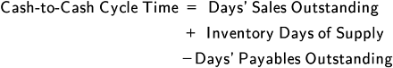
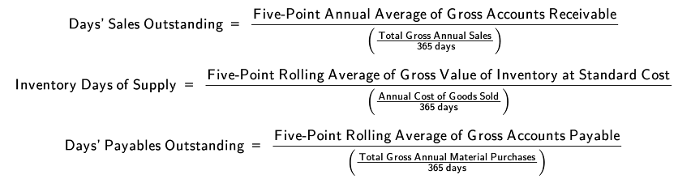
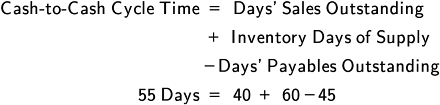

Here we discuss the operational portions of the purchasing process: placing orders, reconciling invoices and approving them for payment, tracking the status of open orders (from an internal functional area perspective), and expediting supply or transportation.
After that, we address the various ways that ordering can be automated using e-procurement, including by using auctions, reverse auctions, exchanges, and portals.
The process of placing purchase orders is used for the bulk of an organization's purchases. Some items that are below a monetary threshold may alternately be purchased using a corporate credit card, while strategic or other more important investments may use other types of contracts.
The process starts with a purchase requisition, which needs to be approved. Once approved, a purchase order is created. This results in an open order in the organization's systems. Various types of purchase orders or e-procurement are discussed next. After the order is received and accepted, the invoice is reconciled and approved for payment, and this part of process is also discussed.
All types of purchase orders or e-procurement constitute a legally binding contract. Two elements of a legally binding contract are contractual offer and contractual acceptance. The first occurs when a purchase order is transmitted; the second occurs when the supplier acknowledges the purchase order.
📖 ASCM Definition — purchase order:
A purchase order is used for an initial or one-time transaction, so it needs to contain all of the details of the sale and all terms and conditions, as described in the definition above. Most purchase orders are electronically submitted such as through a cloud-based system, but multiple paper copies could also be sent. In either case, multiple functional areas need to receive information on open purchase orders.
📖 ASCM Definition — blanket purchase order:
The blanket purchase order replaces shopping for competitive bids for the duration of the contract or use of multiple purchase orders with the same supplier. Use of blanket purchase orders is the simplest form of efficiency improvement a purchasing functional area can make, because it significantly reduces ordering costs. The blanket purchase order contains all master terms and conditions, so these parts of the contract do not need review again until the expiration of this master contract. Routine order releases are used for individual purchases under the blanket purchase order. These releases specify the delivery date and receiving functional area, since these can differ from release to release and cannot be on the blanket purchase order.
Important things to negotiate in a blanket purchase order include quantity discounts, delivery lead times, quality, and other terms.
Important things to negotiate in a blanket purchase order include quantity discounts, delivery lead times, quality, and other terms. It is important for both the buyer and the supplier to forecast the anticipated demand for the material(s) over the course of the agreement, which is often six months, one year, or now often for longer durations. Suppliers use this demand information to ensure that sufficient capacity or inventory will be available at a reasonable cost. Renegotiations can address quantity trends, new prices, new quantity discount schedules, or supply of different items. Blanket purchase orders need exit clauses related to poor supplier performance.
E-procurement can be used to place orders. This is addressed elsewhere but involves auctions, reverse auctions, exchanges, or portals.
As the receiving and payment process in Exhibit 3-19, a purchase requisition needs to have a check and balance in the form of a supervisory approval. An approved requisition results in a purchase order. Once the supplier provides the goods (or services), receiving does a three-way match to verify that the quantities and other details on the purchase order in the receiving report match the packing slips and the invoice. When the purchase order is initially created, finance creates an accrual, which is basically a temporary record of the intended payment. After a correct three-way match, the accrual is removed, finalizing the transaction in the system so the payment can be released. If everything is in order, the order is approved for payment.

Receiving is not a value-added activity in the eyes of customers, so it is best to minimize the time spent on this step. While receiving is responsible for counting all the units and inspecting them for damage (the use of digital photos of the goods and regular communications between the parties can speed this process), it might use random sampling for very large shipments as well as automation such as barcode readers on conveyor belts and so on. Receiving can also develop partnerships and find ways to certify to key suppliers that inspections aren't needed.
Track and trace is needed for providing visibility and a chain of custody for product origins. Since this subject is addressed elsewhere, here the discussion of order tracking is focused on the need for various functional areas to track the status of open orders until their completion.
To expedite is "1) to rush or chase production or purchase orders that are needed in less than the normal lead time. 2) To take extraordinary action because of an increase in relative priority" (ASCM Supply Chain Dictionary).
Expediting can be applied to any stage of the supply chain. We'll consider expediting of supply (source and make) and of transportation (deliver).
Tracking the status of open orders is important to the following internal functional areas:
One example of an exception that one of these parties can report is a receiving discrepancy report. Receiving will prepare a list of receiving exceptions that need to be investigated or resolved. This can be from incorrect quantities, unacceptable quality, or the wrong items being received. A discrepancy such as this could result in needing to expedite supply or transportation. Expediting could also be initiated by sales or an external party.
Expediting of supply is something that should be very rare indeed in a well-managed system, because it often reduces profitability and causes other unintended side effects such as harming customer service for customers being bumped. However, expediting is sometimes necessary because not everything goes according to plan or a customer is important enough or willing to pay enough to make it necessary or worthwhile.
If they were to spend as much time on improving forecasts as they did at expediting, it would likely produce better and longer-lasting results.
What creates the need for expediting (real or apparent)? In many cases, expediting is caused by inventory shortages, which are in turn caused by poor demand forecasting. The result is that salespersons start competing against one another to get their customers' needs satisfied at the expense of other salespersons' customers. Salespersons are often willing to spend a great deal of time expediting, by which we mean cajoling various suppliers or internal staff to get more done in less time or shift priorities. When this fails, salespersons may then escalate their expediting to senior salespersons or a vice president based on the importance of the customer. This scenario is an example of what happens when people focus on the short term and ignore long-term improvements. It creates an atmosphere of one emergency after the next. If they were to spend as much time on improving forecasts as they did at expediting, it would likely produce better and longer-lasting results.
Expediting is achieved with suppliers by asking them to prioritize the organization's needs above those of other customers. Depending on how important you are to them, your results may or may not be successful. They may charge the organization a premium for this priority, unless it is to correct an error on their part. Expediting is achieved with internal production by making requests to the master scheduler. Policy may dictate that this be a formal request with proper paperwork. The master scheduler will not allow for expediting of production in the frozen zone (the time period nearest to production when things have already been ordered and so on), so only production in the slushy or liquid zone should be a possible candidate for expediting. If expediting is necessary and the slushy zone production will not be ready soon enough, then another option might be to supply it from allocated inventory (e.g., safety stock or convincing another customer to delay receipt of inventory already promised to them).
Expediting of transportation can take the form of the shipper telling the carrier that a particular shipment needs to move to its destination as fast as possible and without any delays. This type of request may involve paying an expediting fee if the goods need to arrive before stipulated in the shipping contract. It may also not be possible to expedite a delivery much if the process is already efficient.
Another way to expedite transportation is to ship via a faster mode of transport if the shipment isn't already in transit. Just as a commuter may use a ride-share service when a bus will take too long, this may involve using an overnight delivery service if the units are small and light enough for these services to handle, or it could involve upgrading from ground to air transport, again depending on what is being shipped. If expediting is being done at the request of the customer, any extra costs, including administrative costs, would normally be passed on to the customer. If it is being done to fix an error or backlog, the organization will need to assume this expense.
Organizations can measure the amount of expediting that is being done and its costs so they can determine the savings that can be gained if these costs can be avoided.
Portals and trading exchanges are not exclusive to procurement; for example, they could be used with customers when the organization is on the selling end of the transaction or with logistics such as for finding transportation carriers.
Exhibit 3-20 shows the types of online exchanges and other transaction models by the number of buyers and the number of sellers involved in each transaction.

📖 ASCM Definition — portal:
Portals work over web browsers to enable people to more easily interact with systems or other persons. They provide faster access to information than a person could achieve in collecting, sorting, and aggregating the information on his or her own. Individuals can make custom views and perform self-service functions. Portals can be independently or privately owned, or they can be jointly owned and used by a consortium of organizations. Portals increase information reach and reduce distribution cost.
Consumer portals are multiservice websites for consumer interactions, including personalized home pages, email, online shopping and search, and news and entertainment services. Examples include Amazon.com or Yahoo.com.
Business portals allow users to aggregate and perform basic analysis on information relative to their job. Organizational intranets and extranets are examples. Portals give employees and trading partners access to data according to each company's and each user's role. To ensure identity authentication and security, some portals are the only allowed method for communications across enterprises. Portals can gather and continually update both external and internal sources of real-time information to determine customer priorities and make employees more productive. External information can be consolidated from external trading partners, the internet, and industry information services; internal information includes all attached transactional and analytical databases. Often portals are connected with or are a direct output of customer relationship management (CRM) or supplier relationship management (SRM) systems.
SRM portals allow individuals to view and react to the effects of production changes on supplier product or service availability and to see exception-based information and forecasts based on point-of-sale data. Buyers can see suppliers' available-to-promise inventory. The data are presented on a dashboard that allows users to configure what items are tracked. Often a user has no ability to modify the data, which is ideal for partners who need the information but should not be able to change it. For example, a company's suppliers might be given access to a portal to see up-to-the-minute requirements. Suppliers could use the portal to send and receive communications such as to confirm capacity and order status or receive a demand-pull signal for orders.
A physical exchange—such as a stock exchange—creates a space for buyers and sellers to transact business efficiently. Similarly, a trading exchange, also called a B2B marketplace, creates a virtual market in which buyers and sellers can optimize, automate, and coordinate transactions. Automating the procurement process using trading exchanges lowers the cost per transaction and increases market reach for both buyers and suppliers.
📖 ASCM Definition — horizontal marketplace:
Vertical marketplace: An online marketplace connecting buyers and sellers within the same industry. It enables lower prices by lowering transaction costs.
A successful exchange will result in faster decision making, lower inventory, and better collaboration, planning, and production. Trade exchanges include the following:
Online catalogs listing products, sales promotions, and quantity pricing
Online SRM services, including strategic sourcing for direct materials
Billing and payment processing for faster transfer of funds to suppliers
Some exchanges include a full range of SRM services and analytics, and they may also provide supplier certification to give buyers some assurance that suppliers meet certain predefined capabilities.
Exhibit 3-21 shows the complex interactions among partners in a trading exchange. The exchange is at the center because it serves as a hub for numerous transactions among the community. Exchanges facilitate collaboration because members can avoid forming multiple individual interfaces.

A good starting point in this cycle is at the bottom of the diagram where a supplier uploads catalog information to the exchange. The exchange ensures that the catalog is in a format to allow automated searches.
Buyers perform product searches, and matches from suppliers are aggregated. A highly detailed search can use an automated RFQ (request for quotation)/ITT (invitation to tender). Exchanges may help buyers and/or sellers prepare bids or assist buyers in writing more complete queries. Bidding events may require hours of preparation. This may come down to traditional procurement activities or be performed by a third party for many consumers, creating economies of scale. Annualized contract negotiation or a one-time purchase order can be initiated. Supplier availability is communicated to the buyer, and the exchange confirms the order. The transaction is communicated to the bank or financial service provider (FSP), logistics services, and carriers.
B2B marketplace ownership models include the following:
trade exchange hosted by a single company to facilitate collaborative e-commerce with its trading partners. As opposed to public e-marketplaces, a private exchange provides the host company with control over many factors, including who may participate (and in what manner), how participants may be connected, and what contents should be presented (and to whom). The ultimate goal might be to improve supply chain efficiencies and responsiveness through improved process visibility and collaboration, advanced integration platforms, and customization capabilities.
Trading may occur between members or only with the owner. PTXs are formed by market-dominant companies. Most private exchanges are members-only sites, but they do not usually charge fees and do not force suppliers to compete on price alone. PTXs have been developed by Volkswagen AG and BMW AG in the automotive industry and by utilities such as the Tennessee Valley Authority and the Kansas City Power and Light Company.
📖 ASCM Definition — consortia trade exchange:
CTXs are open or member-based sites formed by a consortium of companies, generally within the same industry. These some-to-many sites are semipublic, in that all members are allowed to trade with one another and price is often a major factor in purchases. There is a strong focus on finding new suppliers on these sites. Excess inventory and capacity is frequently traded in a clearinghouse. Ford Motor Company, General Motors Corporation, and DaimlerChrysler AG formed a consortium-based exchange, Covisint, in 2000. Covisint has been owned by a Canadian organization since 2017 so it serves as the third-party intermediary. Covisint has expanded into health care, government, oil and gas, and financial services.
Virtual trading exchange. A virtual trading exchange is "an online trading exchange that enables both information integration and collaboration among multiple trading partners" (ASCM Supply Chain Dictionary).
Private exchanges are very costly; companies with a high transaction volume or a large number of suppliers should consider a private exchange because the larger number of transactions reduces the cost per transaction. Companies with few suppliers or low transaction volume should consider an independent public marketplace to keep costs down or a consortia-based marketplace to consolidate their supplier base with others.
Private exchanges are desirable when partners want high security in data exchange. However, they should determine supplier interest in joining a private exchange. The best candidates are those that have strong market position or exclusive products or services. If the company has market dominance, it cannot gain much from aggregating demand with smaller businesses. The private exchange can help retain the unique brand value. When the company has unique business capabilities such as a unique processing model, then a private exchange can help leverage it.
Auctions determine the value of a good or service on the open market. Winning a bid constitutes a contract. Most auctions require indifference as to who the buyer or seller is, so they are best for commodities (e.g., copper, wheat). Auctions should be avoided when delivery time, reliability, or quality are important. Auction items are solely differentiated by price, and any special features should be put in the description to show the item's value. Auctions benefit both buyers and sellers, with a balance of increased revenue, efficiency, and speed and reduced cost.
Types of auctions include the following:
Standard product specifications that reduce duplicate entries for parts and duplicate suppliers for the same part
Faster response to needs and faster time to market
Reduced logistics and transportation costs due to better volume leverage.
Long-term loss of suppliers and fewer skilled suppliers.
Forcing supplier concessions could lead, in the long term, to worse supply chain coordination, poor planning, and adversarial relationships. Key suppliers should not be moved to cost-based exchanges.
Benefits for suppliers are less clear than those for buyers. They include
Future bidding improved by knowledge of winning bid; shows need for cost reduction
Better and more accurate catalogs for increased order accuracy
Supply and demand planning and collaboration, if offered.
However, these benefits must be weighed against significant reductions in revenue. Low bid winners may have unprofitable margins.
Possibility that an option contract may lock up the supplier's capacity even when the business is not guaranteed
Fewer investments in improving processes due to tighter margins
Possibility that the buyer will use the seller's data to get a lower bid elsewhere
Exchange integration costs for software and connectivity.
Suppliers whose value is not purely dependent upon low price (e.g., those with brand recognition for quality or dependability) are less likely to participate. If 100 suppliers participate in an online auction but only one supplier wins the bid, the bid was a waste of time for the other 99 suppliers. Suppliers that do not see results may drop the service, especially with public horizontal exchanges. Suppliers are better off building long-term relationships, reserving exchanges to liquidate excess inventory. Whenever they win bids, their goal should be to start a personal relationship with these companies.